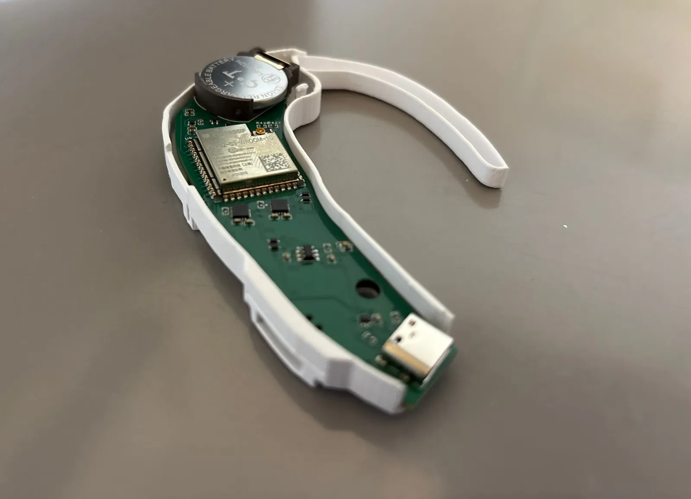
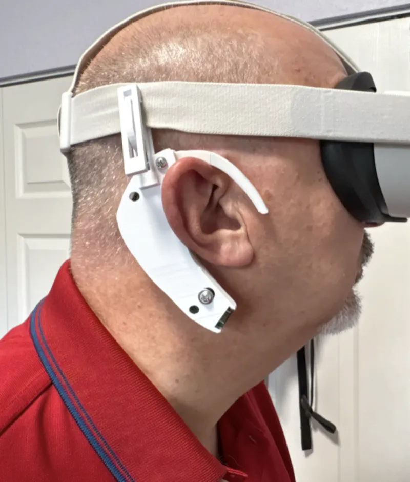

Invention · FGCU HCI research
A motion-sickness fix that rides on the headset.
A wearable that times bone-conducted vibration to the moments VR is most likely to make you sick. I designed and built it end to end: the mount, the circuit board, the firmware, the host software and the test tools.
- RoleInventor, first author, hardware, software builder
- WithDr. Md Baharul Islam, FGCU
- Built inPython, C++ on ESP32-S3, Swift
- PaperIEEE ICIICE 2026: doi.org/10.1109/ICIICE69672.2026.11565340


The problem
Cybersickness keeps a lot of people out of VR. It comes from a conflict between what the eyes see and what the inner ear feels. Most fixes change the picture, by narrowing the field of view or blurring motion, and that costs presence.
I wanted a fix that leaves the picture alone and that people would actually wear. I ran customer research throughout development, and treated comfort and setup as requirements on the same level as effectiveness.
Design decisions
- Nothing extra to strap on
- Bone-conduction devices usually need a headband and per-user fitting. My clip mounts on the headset itself, angled about 45° so the headset's weight presses the transducer onto the mastoid.
- One size, barely there
- A flexible TPU hook rests over the ear and fits different ears. The whole assembly weighs 44 g, under 10% of a typical headset.
- Works with what people already play
- A Python host app reads head motion through OpenVR, so it runs next to any SteamVR app without changing it.
- Timed to physiology
- The otolith organs sense changes in acceleration. The device fires a brief 500 Hz burst just after each peak of linear jerk, where visual-vestibular conflict (the root of VR motion sickness) is strongest.